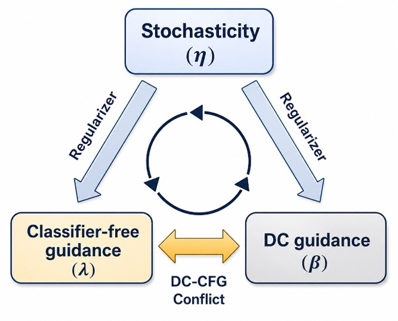
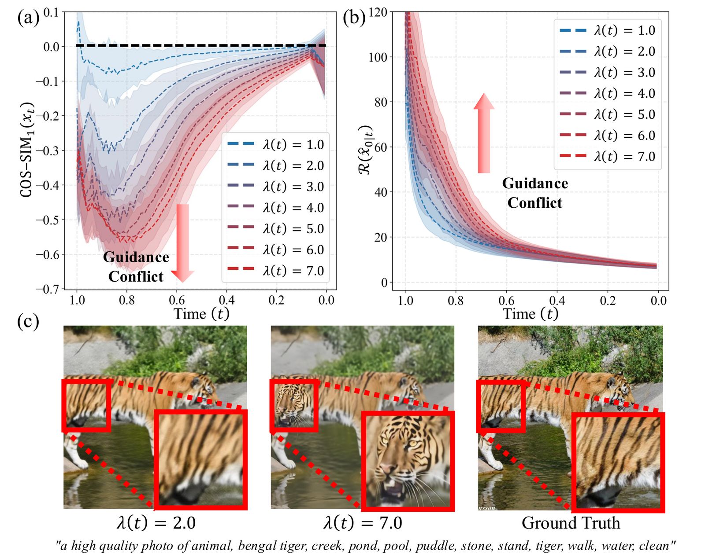
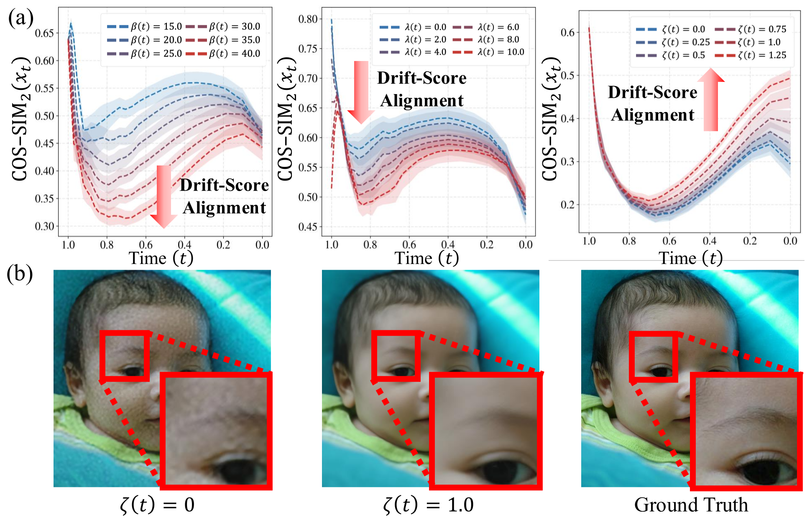
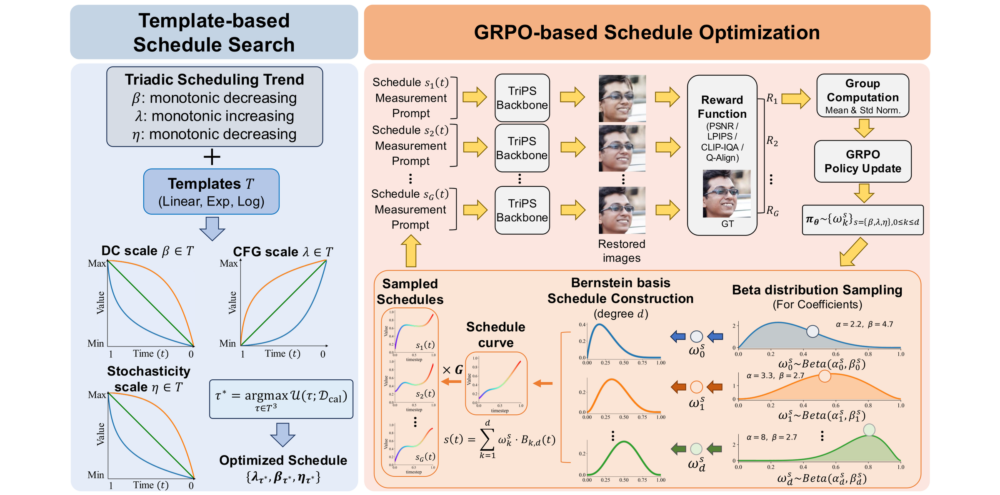
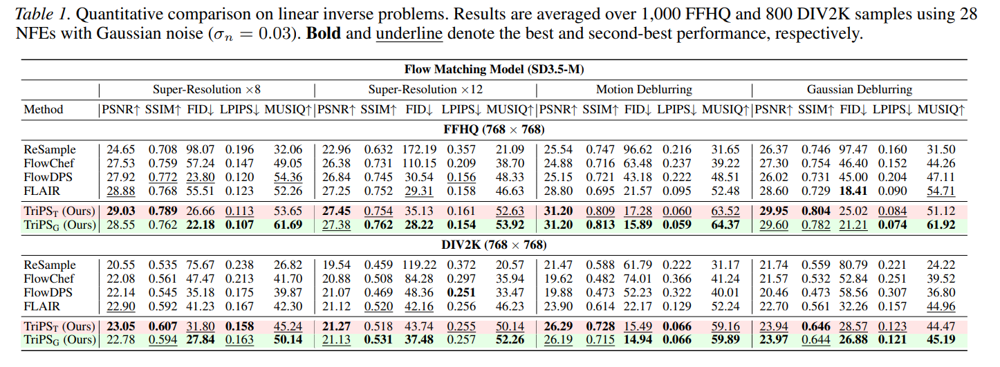
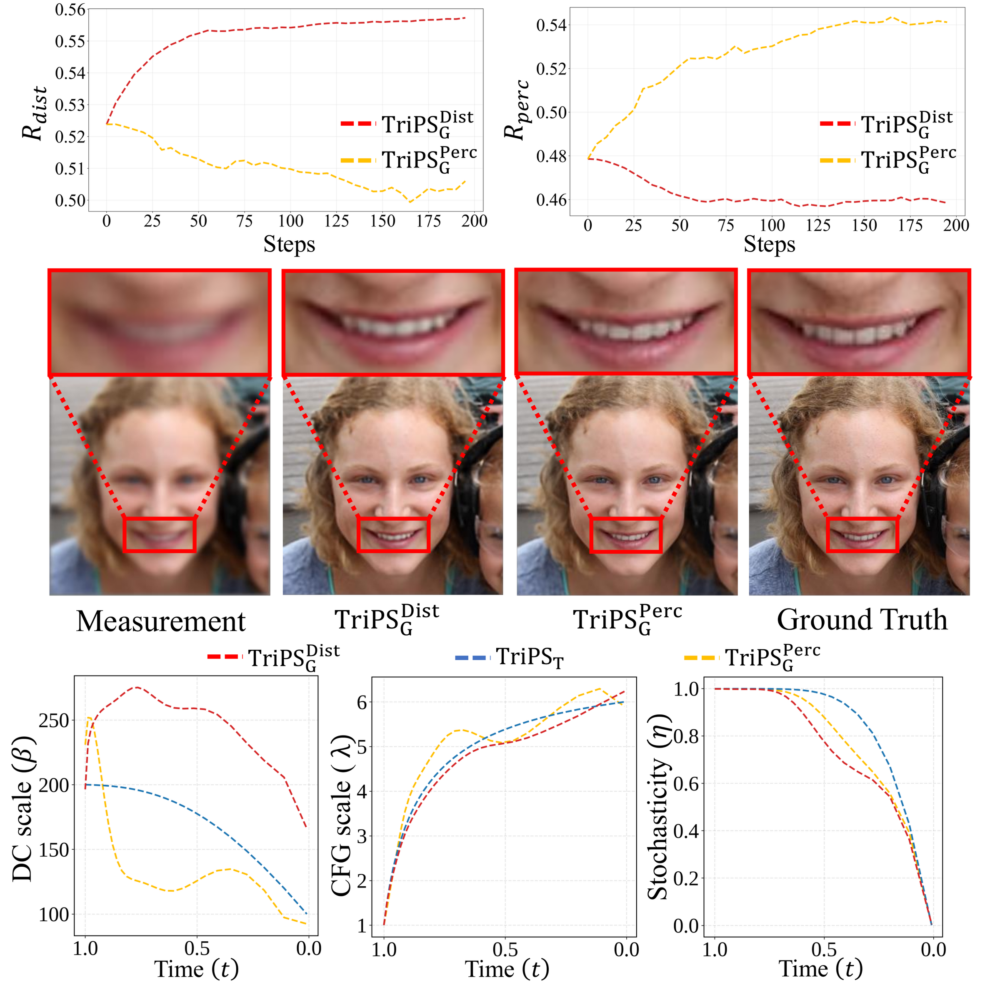

Optimizing Guidance and Stochasticity Schedules
1Dept. of Electrical & Computer Engineering · 2INMC · 3IPAI & AIIS, Seoul National University, Republic of Korea
*Equal contribution · Correspondence: sychun@snu.ac.kr
Key Idea
Generative posterior sampling for inverse problems usually consists of three main components: data consistency (DC) guidance, classifier-free guidance (CFG), and stochasticity. While prior arts have focused on how to develop each or all components, less attention has been given to how to schedule them, leading to heuristically fixed or partially adjusted suboptimal schedules. TriPS instead reformulates posterior sampling as an optimization problem of time-varying schedules and jointly optimizes the three schedules along a triadic trend.

High early to strongly enforce data consistency, then reduced to avoid over-enforcing it.
Low early to suppress the guidance conflict, then increased to sharpen semantics.
High early to regularize the off-manifold phenomenon, then annealed to reduce sampling error.
Qualitative Samples
For each sample, the top slider compares the measurement against our reconstruction, and the bottom slider compares FlowDPS against ours. Drag to compare, and browse with the arrows.
Drag the handle on any pair to reveal each side. Inpainting uses TriPS-T; the others use TriPS-G.
Analysis
We analyze the triadic coupling dynamics in posterior sampling, governed by DC guidance, CFG, and stochasticity. We formalize the early-stage conflict between DC guidance and CFG, and demonstrate how stochasticity regularizes sampling trajectories toward higher-probability regions.


Method
To realize the triadic scheduling trend, TriPS comprises two complementary paradigms: a template-based schedule search that identifies robust schedule curves from a discrete family of functional forms, and a GRPO-based schedule optimization that captures complex temporal curves beyond the fixed functional templates.

A coarse grid search over a discrete template family {linear, exponential, logarithmic} that satisfies the triadic trend, maximizing a multi-objective utility of fidelity (PSNR) and perceptual quality (LPIPS). Provides a robust baseline and a warm start for GRPO.
Each schedule is a Bernstein polynomial with coefficients sampled from Beta distributions, confining every curve to a physically valid range. The policy is optimized with a clipped GRPO objective and a hybrid IQA reward combining distortion and perceptual metrics.
Quantitative Comparison
Our experiments clearly demonstrate that TriPS-T consistently outperforms existing flow-based approaches across all evaluation metrics, and that TriPS-G further advances these results, significantly improving perceptual metrics while maintaining high measurement consistency.

Ablation

Cite
@misc{bang2026triadicdynamicsawarediffusion,
title = {Triadic Dynamics Aware Diffusion Posterior Sampling for Inverse
Problems: Optimizing Guidance and Stochasticity Schedules},
author = {Junseo Bang and Dong Ju Mun and Hoigi Seo and Seongmin Hong and Se Young Chun},
year = {2026},
eprint = {2605.26470},
archivePrefix = {arXiv},
primaryClass = {cs.CV},
url = {https://arxiv.org/abs/2605.26470}
}